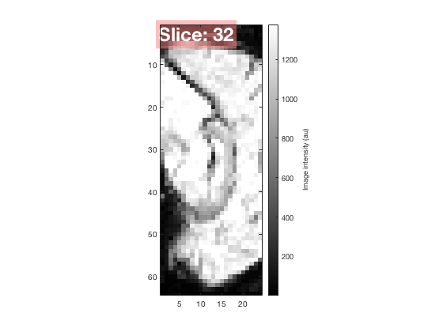
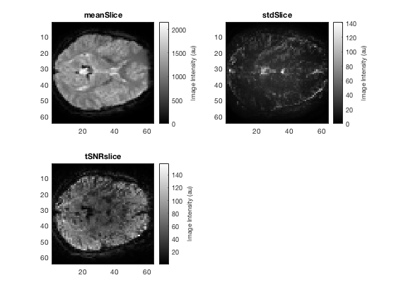
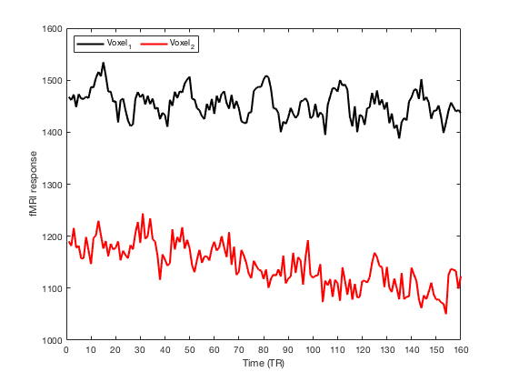

2018 - Introduction to Matlab Programming
Assignment
2018-11, set by Denis Schluppeck
2018-11-25, completed by Rohan Sopp
Contents
Summary
Provide a short abstract (<250w) of
% to produce a script that runs through a particular set of analysis steps % and displays the results % basically talk through the steps.
Load fMRI data
data = niftiread('dafni_test.nii'); niftiinfo('dafni_test.nii')
ans =
struct with fields:
Filename: '/Users/rohansopp/Documents/MATLAB/2018-assignment/dafni_test.nii'
Filemoddate: '11-Nov-2018 19:30:03'
Filesize: 62914912
Description: '5.0.10'
ImageSize: [64 64 24 160]
PixelDimensions: [3 3 3 1.5000]
Datatype: 'single'
BitsPerPixel: 32
SpaceUnits: 'Millimeter'
TimeUnits: 'Second'
AdditiveOffset: 0
MultiplicativeScaling: 1
TimeOffset: 0
SliceCode: 'Unknown'
FrequencyDimension: 0
PhaseDimension: 0
SpatialDimension: 0
DisplayIntensityRange: [0 0]
TransformName: 'Sform'
Transform: [1×1 affine3d]
Qfactor: -1
raw: [1×1 struct]
Display fMRI data
. Using the fixed version of arrayview.m, display the 4d (turned 3d) data . Made changes to returnSlice.m (see updated version returnSlice1.m)
arrayview(data)
==============================================
arrayview() program - 2018 assignment
Press the following buttons to:
up/down change slice
o/O change orientation
c/C change cursor
q/Esc quit
==============================================
h2: data set is 4d - take the mean
h2: suitable input array for returnSlice1
ans =
Figure (1: arrayview() - 2018 assignment) with properties:
Number: 1
Name: 'arrayview() - 2018 assignment'
Color: [0.9400 0.9400 0.9400]
Position: [440 378 560 420]
Units: 'pixels'
Use GET to show all properties
 Write some helper functions:
% 1. a function that takes a 4d array of data and returns the mean across % time. You should be able to use is e.g. like this: m = calculateMeanAcrossTime(data); % 2. a function that takes a 4d array of data and returns the standard % deviation across time. --> look at the matlab function std() % s = calculateMeanStdAcrossTime(data); % 3. a function that takes a 4d array of data and returns the temporal % signal to noise ratio, where tSNR = calculateTSnr(data);
Display slice 10 (axial/horizontal view) of each of the follwing
a) the mean, b) std, and c) tsnr image
. using imagesc(), colorbar, and colormap(gray). You can display them in 3 separate figure windows or use subplot() to create panels
% 3 is the axial orientation % slice number 10 % m = Mean % s = Standard Deviation % tSNR = Temporal Signal to Noise Ratio meanSlice = returnSlice(m,10,3); figure(1) subplot(2,2,1), imagesc(meanSlice) c = colorbar; c.Label.String = 'Image Intensity (au)'; colormap(gray); title('meanSlice') stdSlice = returnSlice(s,10,3); subplot(2,2,2), imagesc(stdSlice) c = colorbar; c.Label.String = 'Image Intensity (au)'; colormap(gray) title('stdSlice') tSNRSlice = returnSlice(tSNR,10,3); subplot(2,2,3), imagesc(tSNRSlice) c = colorbar; c.Label.String = 'Image Intensity (au)'; colormap(gray) title('tSNRslice') % . chosen subplot(2,2,...) because I felt it was more aesthetic than subplot(3,1,...) % . https://uk.mathworks.com/help/matlab/ref/colorbar.html % . For the tSNR image intensity, the larger values are the result of a % larger mean and a smaller standard deviation (or at least the difference between them) % . the smaller values therefore correspond to a smaller difference between % the mean and the standard deviation(i.e. more deviation), suggesting that these voxels were more noisey
Find the voxel with the highest tSNR value
. Report the location of the voxel with the highest tSNR and its value
https://uk.mathworks.com/matlabcentral/answers/63247-get-max-value-and-index-of-multidimensional-array
. Both linear index and [x,y,z] notation are acceptable as solutions.
% . Idx is the index of tSNR(:) containing the largest tSNR value. % . M is the value of the voxel with the largest tSNR value [M, Idx] = max(tSNR(:)) % . ind2sub function extracts the x, y and z indices of tSNR... % corresponding to the largest element [Ix, Iy, Iz] = ind2sub(size(tSNR),Idx) % . Ix: the index position on the x axis that contains the largest element % . Iy: the index position on the y axis that contains the largest element % . Ix: the index position on the z axis that contains the largest element % --> Coordinates for the voxel with the highest tSNR value % tSNR(Ix, Iy, Iz): % --> shows you the value of the voxel at the specified coordinates % --> as does M
M =
single
187.3587
Idx =
91957
Ix =
53
Iy =
29
Iz =
23
Plot the timecourses at two voxels from the data set
. Plot the fMRI response at the two locations. In the same plot. the values on the x-axis should go 0 .. 1.5 .. 3.0 .. 238.5
x = 0:10:160; % . Chose to plot the x axis in increments of 10 rather than 1.5 mainly due to the aesthetic of the graphic and that for each x % there is still a correspondance to y % [18, 14, 4] % [40, 19, 3] % x = fmri response % y = time (TR) voxel1 = returnTimecourse(data, 18, 14, 4); figure(2) plot(voxel1, 'k', 'linewidth', 2) xlim([0 160]) ylim([1000 1600]) xticks(x) xlabel('Time (TR)') ylabel('fMRI response') hold on voxel2 = returnTimecourse(data, 40, 19, 3); plot(voxel2, 'r', 'linewidth', 2) legend({'Voxel_1', 'Voxel_2'},'Location','northwest','NumColumns',2)
Note...
error checking for inputs, other kinds of "defensive programming" that I talked about (maybe anticipating errors that might commonly occur) small snippets of code that show / prove that functions perform in expected way, maybe showing more than one version of a solution
If you find solutions / hints to different aspects of this problem set with google searches and / or on stackoverflow and matlab documentation, this is completely acceptable - just make sure you don't copy code verbatim, but use your own variable names and comments.
Provide links / a reference to those pages, please.